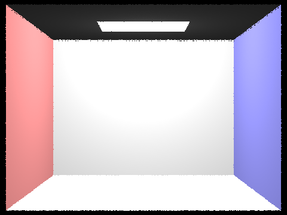
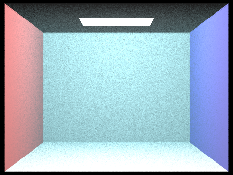
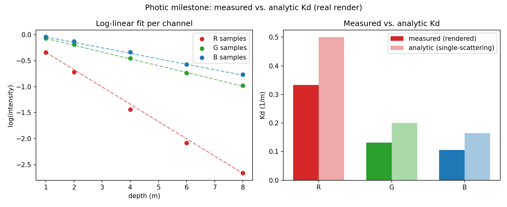

Zachary Liang · Blair Xu · CS 184, Summer 2026
Links: 1-minute video · slides · source code
Our Week 1 goal was a working grayscale water medium plus a Kd (attenuation coefficient) measurement pipeline on top of our HW3 path tracer. We hit both, and went a step further: the medium already runs in full per-channel RGB, and it gave us our first real result: measured attenuation coming out below the naive single-scattering prediction on every channel, which is exactly the effect the project set out to measure.
A new Medium class models a homogeneous body of water: per-channel Beer-Lambert absorption,
wavelength-neutral scattering, analytic free-flight distance sampling (no ray-marching), and isotropic
phase sampling (the Week 1 baseline; Henyey-Greenstein is Week 2). Every ray checks whether it scatters
before hitting a surface. If it does, we do next-event estimation from the scatter point plus a
Russian-roulette recursive continuation, so multiple scattering emerges on its own rather than being
special-cased. The water volume is auto-derived from any scene's bounding box, so any HW3
.dae renders "underwater" with no new geometry (two flags: -w turbidity,
-k depth). With no water flag, the renderer is byte-for-byte HW3.
A small Python harness (tools/photic_measure.py) samples brightness from the renders, fits
Kd per channel by least squares, and compares it against the analytic prediction
Kd = sigma_a + sigma_s.
Rendering an empty Cornell box at turbidity 0.15 across increasing depth and fitting Kd per channel:
| channel | measured Kd | analytic Kd | reduction | scattering albedo |
|---|---|---|---|---|
| R | 0.333 | 0.500 | 33.5% lower | 0.30 |
| G | 0.131 | 0.200 | 34.3% lower | 0.75 |
| B | 0.105 | 0.165 | 36.1% lower | 0.91 |
Measured Kd lands below the naive prediction on every channel. That means scattered photons are re-entering the beam instead of just vanishing. The gap is largest for blue (mostly scattered) and smallest for red (mostly absorbed); we never coded that ordering in, so it's a good sign the per-channel medium is behaving correctly.



We met the Week 1 target and reached RGB early. Known simplifications, all within baseline scope: scattering is isotropic; the "radiometer" reads pixel brightness rather than a true irradiance integral; and the absorption coefficients are order-of-magnitude estimates rather than a digitized table. Week 2, as planned: the Henyey-Greenstein phase function, per-channel extinction refinement, the Secchi-disk scene and validation, and the convergence-vs-optical-depth study.
Following the proposal's split, we built the medium infrastructure and the measurement harness in parallel, then merged and verified them together against a working RGB medium render with a real Kd readout ahead of the milestone deadline.